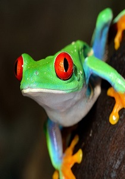

Welcome to Green Costa Rica
Situada en medio del Mar Caribe y el Océano Pacífico, el paisaje de Costa Rica es pintado con majestuosos volcanes y montañas, exuberantes bosques tropicales e inmensas llanuras costeras. Pero unas vacaciones en Costa Rica ofrecen más que unos paisajes adorables, este país está inmerso en una historia sumamente rica que data de los años 1500 y cuenta con un estilo de vida centrado en la comunidad que es poco común en gran parte del mundo. Aquí, usted puede despertarse con el sonido de monos aulladores o tucanes conversando entre ellos, después de aprender sobre las misteriosas esferas de piedra que pesan hasta 15 toneladas. Amantes de la naturaleza, ecologistas, surfistas, amantes de la historia - no importa cuál sea su personalidad o pasatiempo, las vacaciones en Costa Rica ofrecen algo increíble para explorar o descubrir.
Visite Costa Rica
Aunque el área de Costa Rica tiene poco más de 51,100 kms cuadrados es hogar del 5% de la biodiversidad mundial, y sus habitantes están sumamente comprometidos en la protección de este magnífico paraíso.
Los amantes de la naturaleza en Costa Rica pueden explorar sus 26 parques nacionales y tierras protegidas las cuales representan aproximadamente el 25% del total de tierra del país. Elija un lugar junto al papagayo escarlata en el Parque Nacional Corcovado, diviértase con los monos aulladores en el Parque Nacional Manuel Antonio o piérdase en la belleza de las salvajes magnolias en la Reserva del Bosque Nuboso de Monteverde.